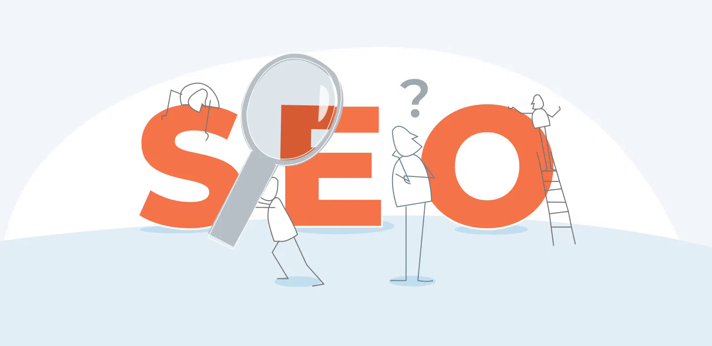

O que é SEO Avançado?
SEO avançado vai além da otimização básica de palavras-chave. Ele envolve práticas técnicas e estratégias avançadas para melhorar o desempenho do seu site nos mecanismos de busca.

Otimização Técnica
A otimização técnica é um dos principais pilares do SEO avançado. Ela inclui:
- Melhorar a velocidade de carregamento do site
- Garantir que o site seja responsivo (compatível com dispositivos móveis)
- Implementar dados estruturados para facilitar a indexação
- Certificar-se de que o site é seguro (uso de HTTPS)
Estratégias de Conteúdo
Conteúdo é o coração de qualquer estratégia de SEO. No SEO avançado, você deve:
- Publicar conteúdo de alta qualidade que resolva as necessidades do usuário
- Utilizar palavras-chave de cauda longa
- Otimizar o conteúdo para perguntas frequentes (FAQ)
Link Building
Link building é uma técnica importante no SEO avançado. Consiste em:
- Obter backlinks de sites de autoridade
- Participar de guest posts em blogs relevantes
- Evitar links de baixa qualidade ou tóxicos
Experiência do Usuário (UX)
A experiência do usuário impacta diretamente o SEO. Para melhorar o UX:
- Facilite a navegação no site
- Reduza o tempo de carregamento das páginas
- Garanta que o design seja limpo e de fácil leitura